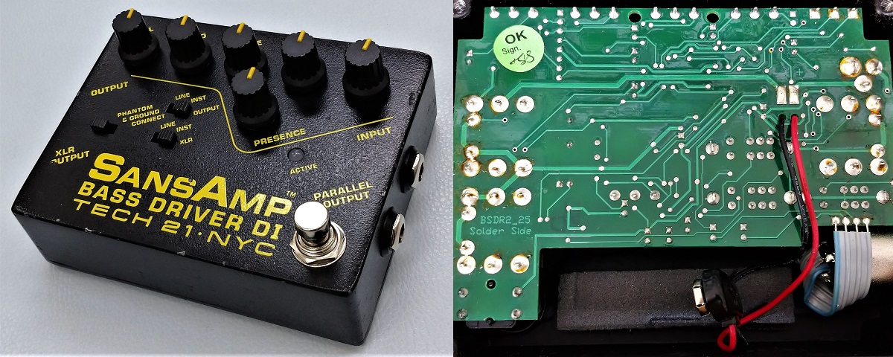
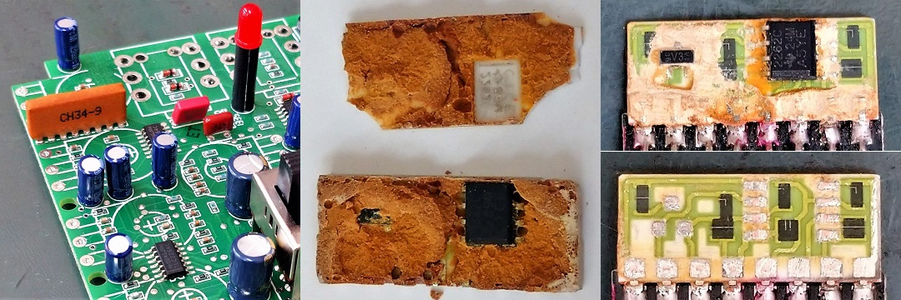
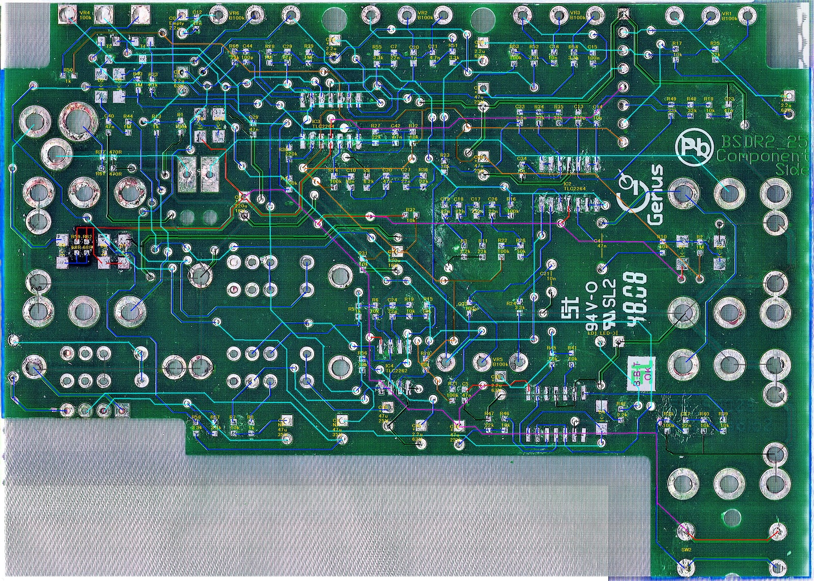
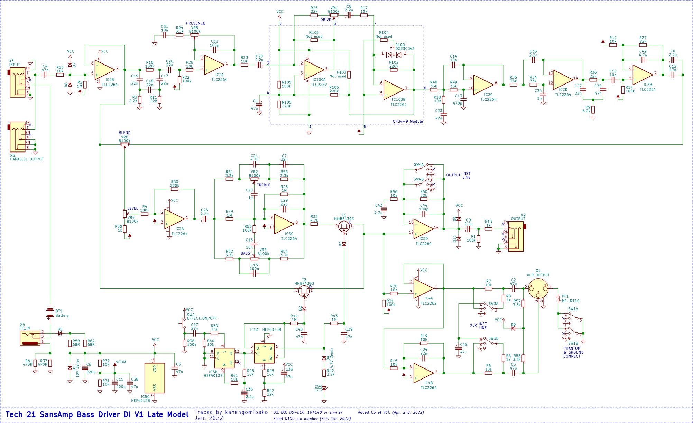
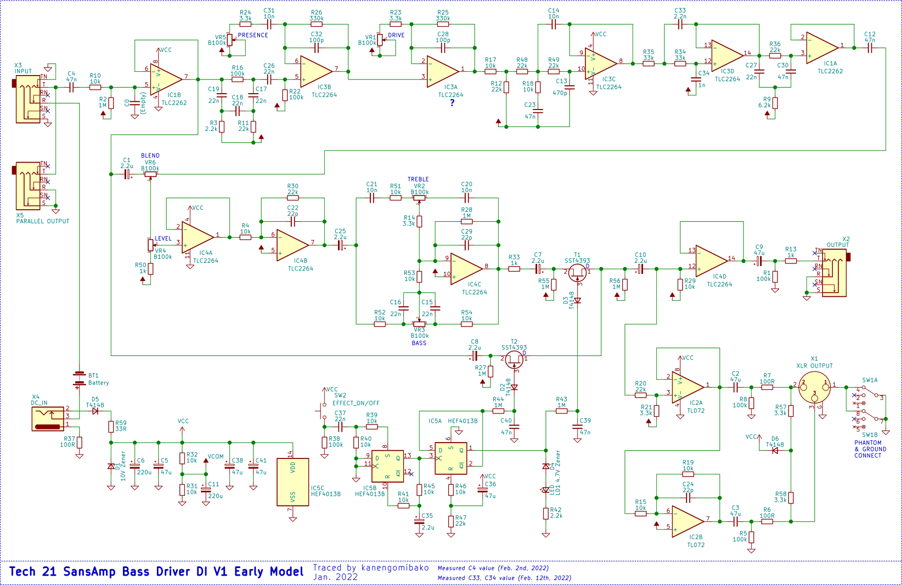
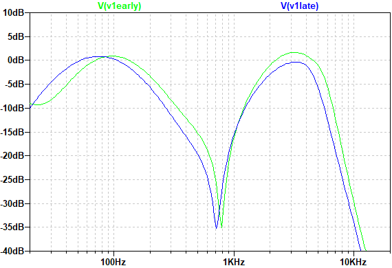
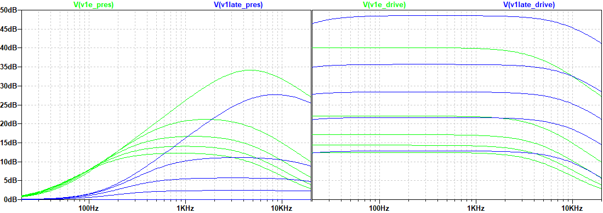
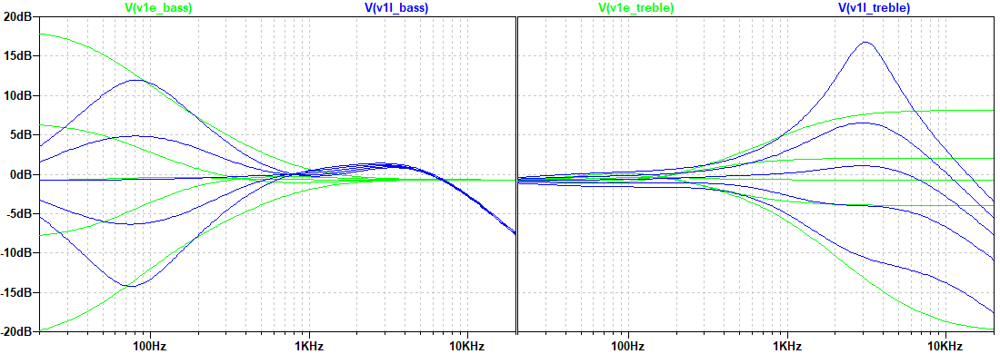
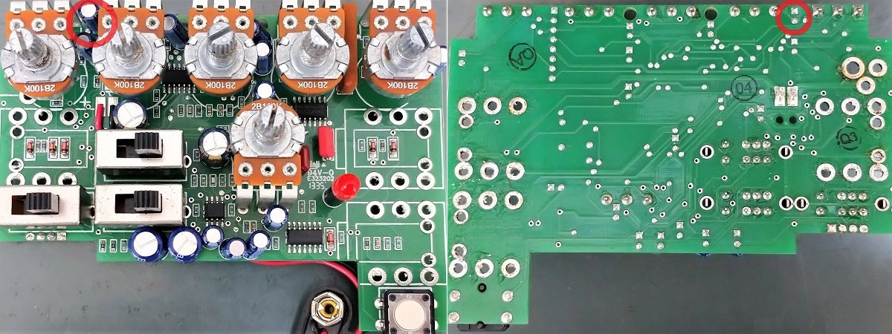
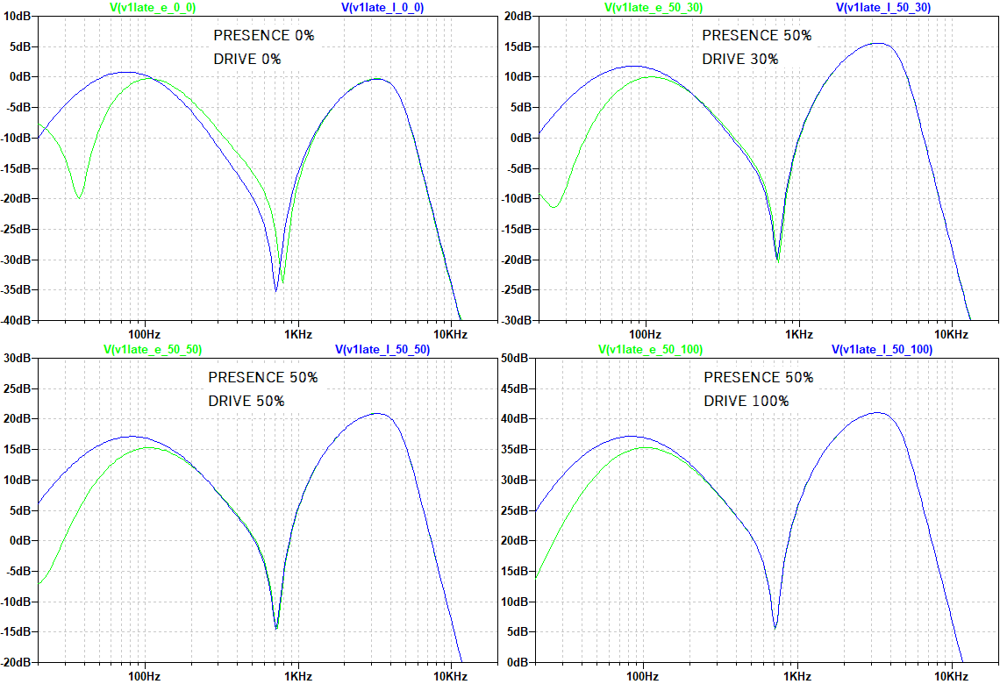

Tech 21 SansAmp Bass Driver DI V1後期型 解析
2022年04月04日 カテゴリー：修理・改造・解析

Tech 21 SansAmp Bass Driver DI（以下BDDI） V1初期型とBEHRINGER BDI21の違いについては解明しましたが、今度はBDDI V1初期型からV1後期型へどのように変わったのか気になったため、引き続き解析をしていくことにしました。※上写真のV1後期型は、オリジナルとは違うジャック、LED、スイッチに交換してあります。
＜モールドとの闘い＞

V1後期型ではモールドされた部分はないのだろうと思っていたのですが、分解してみると黄土色の謎モジュールが存在していました。調べていくと、これはTech 21 Character Seriesでも使われているモジュールだということがわかり、freestompboxes.orgで解析されていました（CH33-6という記載）。私が入手したBDDIではCH34-5、CH34-9という印字で、中身はそれぞれ同じ回路でした。印字は型番というよりロット番号のようなもののようです。
モールドはそこまで硬くはなく、小型なのでV1初期型の時より苦労しませんでした。燃料用アルコール（メタノール）でも少し溶けている様子でしたが、削った方が早いと思います。削っていくと何やら見慣れない素材の基板が現れましたが、このページにある画像とそっくりで、セラミック基板というものだとわかりました。黒い部分は抵抗となっていて、切り込み線の入り方によって抵抗値が違っています。
＜基板画像・回路図＞（KiCadデータ・高解像度画像はGitHubへ）

V1後期型では複数の種類の基板があります（後述）が、解析に使ったのは小型表面実装部品・部品枠線なしの基板です。部品番号は不明なので、適当に割り振っています。

V1初期型（回路図：）と比較すると、スライドスイッチ追加はもちろんですが、その他の部分もかなり変更が加えられています。特にトーン回路の違いについては好みが分かれるところでしょう。変更された当時どのように説明されていたのかわかりませんが、完全に別バージョンと言ってよいと思います。
- チューブアンプエミュレーション回路
ツェナーダイオードによるクリッピングが採用されており、V1初期型より電源電圧の影響が少なくなりました。

PRESENCE 0% DRIVE 0% BLEND 100% でのシミュレーションです。似た特性ですが、谷となる周波数がV1初期型より低く、高音域が少し減っています。
- PRESENCE DRIVE

増幅部分のみのシミュレーションです。PRESENCEは、調節される周波数がV1初期型より高音域側になります。DRIVEについては、クリッピング用ツェナーダイオードの端子間容量の影響で少し高音域が下がっています。
- BASS TREBLE

V1初期型では低・高音域を全体的に調整するロー・ハイシェルフタイプのトーン回路でしたが、ある周波数付近を調整するピーキングタイプへと変更されています。また、TREBLEポットの1番側の抵抗にコンデンサが並列接続してあるため、高音域が下がるようになっています。
＜仕様変更＞
V1初期型からV1後期型に変わった時期について調べていくと、2004年5月の公式サイトのアーカイブや5ch（旧2ch）掲示板の書き込みでV1後期型が見つかりました。また、ベースマガジン2003年6月号にV1初期型の写真が掲載されているとTwitterで情報提供いただきました。よって、変更時期は2004年頃だと考えてよいでしょう。
その他、V1後期型で確認できた仕様変更について記載しておきます。
- HAMMOND刻印
V1初期型のケースはHAMMOND1590BBでしたが、HAMMOND刻印のないケースへ変わっています。
- 電源部抵抗 R37 R61
220Ω 1個のみ、220Ω 2個並列、470Ω 2個並列といったパターンがあります。
- 入出力ジャック
V2と同じ金属製ナットが付いたタイプのフォンジャックが使われているものがあります（おそらく新しめの個体）。
- 基板種類
変更順序は不明ですが、少なくとも4種類の基板が存在します。
・V1初期型と同じ大きさの表面実装部品、部品枠線なし
・小型表面実装部品、部品枠線なし
・小型表面実装部品、部品枠線あり
・小型表面実装部品、部品枠線と部品番号あり
＜電解コンデンサの追加＞

私が入手したV1後期型3台のうち、2台は回路図右上の2.2μF電解コンデンサC0（上写真赤丸）が実装されていませんでした。こいち時間に掲載されている個体でも、実装されているものとされていないものがあります。Twitterにていただいた情報によると、このコンデンサは2010年頃から追加されるようになったようです。コンデンサありの場合、半田付け部分にリード線をニッパーで切ったような痕跡があるので、実機をお持ちの方は確認いただくとよいと思います。
コンデンサ未実装（黄緑）と実装済（青）で周波数特性がどのように違うかシミュレーションしました（BLEND 100%）。

コンデンサが追加されたことで、低音域が強化されていることがわかります。
表面実装のコンデンサと並列に電解コンデンサを実装できるような基板になっているということは、メーカーとしても設計に迷いがあった部分なのでしょう。最初はV1初期型と同じ47nFで問題ないと判断されたものの、多弦ベースの普及等により見直しがなされたのかもしれません。真実がどうなのかはわかりませんが、メーカーの製作事情がうかがえる面白い発見だったと思います。